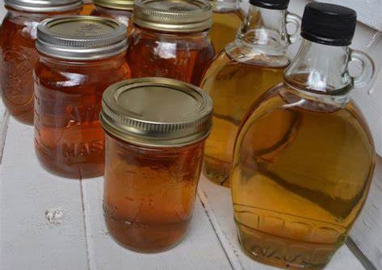

 


Maple syrup made easy! watch this tutorial by the amazing Adam Ragusea to start you on your journey of tree syrup.
Our yearly "Plant a Christmas tree" event was more succesful than ever before. With over 300 trees planted together, we proudly say no to both plastic and wasteful tree cutting. Click to learn more!
Making your own tree guard is easy. You can reuse twigs from pruning to make a unique texture that you won't find sold in a shop.
Ever wished you could have a single tree that grows all your favourite fruit? It might be more than just a fantasy. Grafting is a practice of attaching a tree bud to a tree of a different species, creating a branch that grows a different fruit.